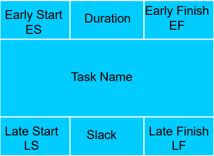
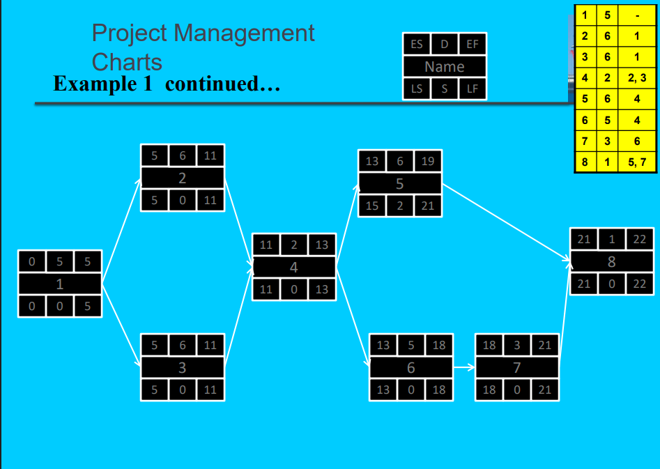

PERT Diagram
What is a PERT chart?
A PERT (Program Evaluation Review Technique) chart models tasks (nodes) and their dependencies (edges). It helps estimate project timelines by showing earliest and latest start/finish times and slack.


Use the Learn Mode to practice filling earliest/latest times and slack. The Start button opens the interactive quiz.